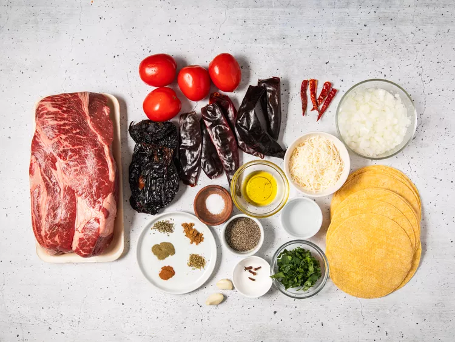
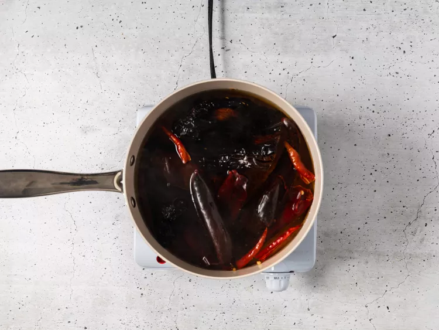
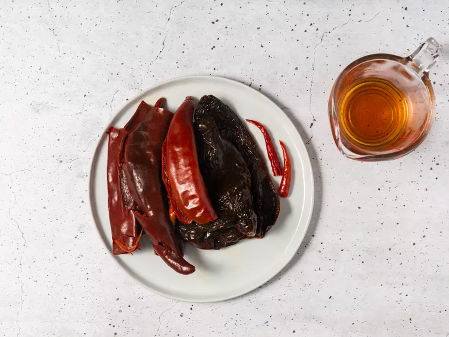
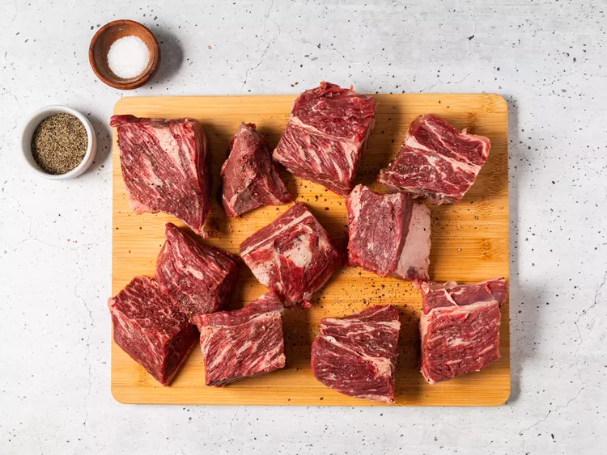
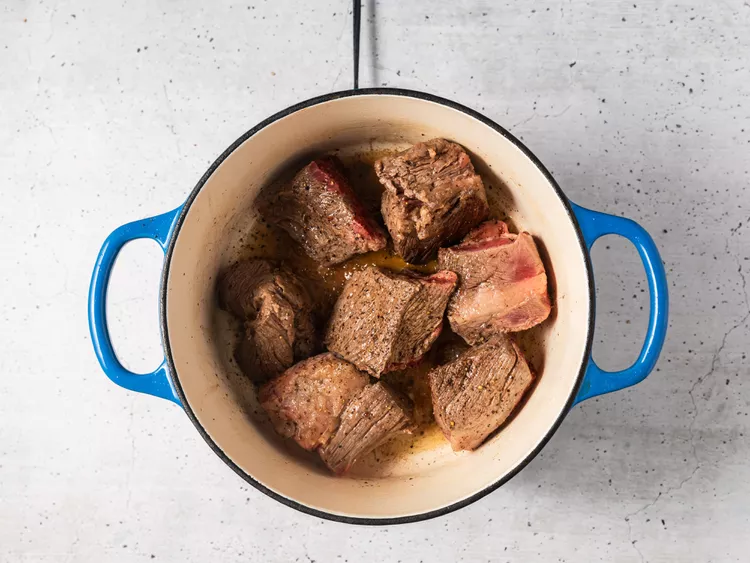
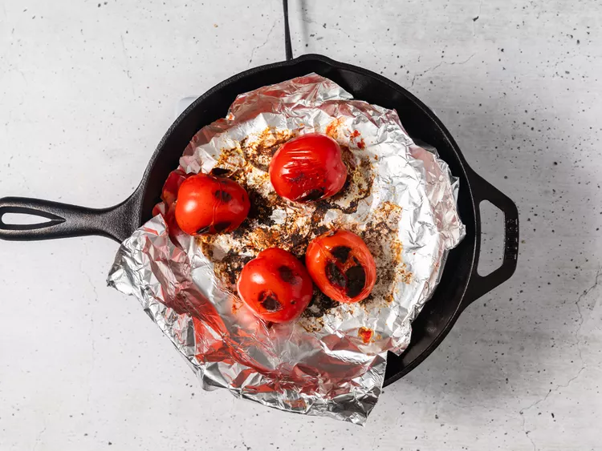
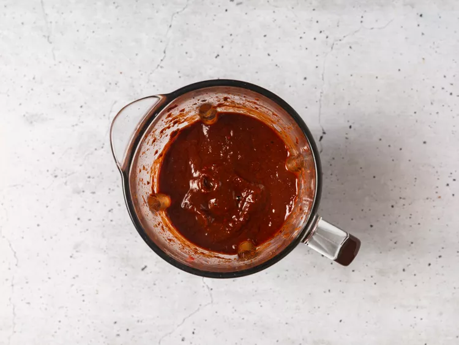
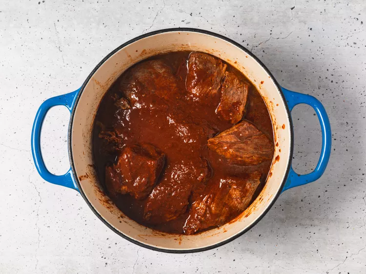
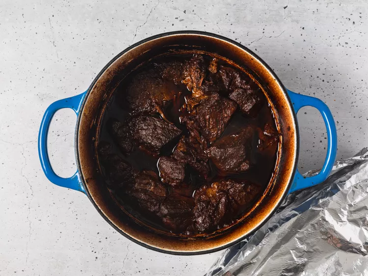
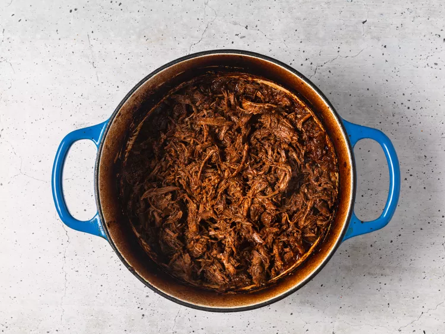

Mexican birria tacos, Jalisco-style, made with braised beef that's slow-cooked in a fragrant 3-chile sauce with a delicious spice mix. Crispy tacos, and tender, mouth-watering beef team up with melted Mexican cheese in this impressive meal. This recipe takes a little time but it's so worth it!
Ingredients
Sauce:
6 dried guajillo chile peppers, seeded
4 dried chile de arbol peppers, stemmed and seeded
2 dried ancho chiles, stemmed and seeded
1 tablespoon olive oil, or as needed
4 medium Roma tomatoes
2 tablespoons white vinegar
2 cloves garlic
2 teaspoons ground black pepper
4 whole cloves
1 pinch ground cinnamon
1 pinch ground cumin
1 pinch ground thyme
1 pinch dried marjoram
1 pinch dried oregano
1 pinch salt
Meat:
4 pounds beef chuck roast
salt and freshly ground black pepper to taste
Tacos:
18 corn tortillas
1 large white onion, finely chopped
1 bunch fresh cilantro, chopped
1 cup shredded queso asadero (white Mexican cheese) (Optional)
Steps:
Gather all ingredients. Preheat the oven to 325 degrees F (165 degrees C). Fill a pot with water and bring to a boil.

Step 1
Start the sauce: Add guajillo, arbol, and ancho chile peppers to the boiling water; boil for 5 minutes.

Step 2
Remove pot from the heat and allow peppers to soak until cool. Drain, reserving 1/4 cup of the cooking water.

Step 3
Meanwhile, sear the meat: Rinse beef and pat dry with paper towels. Cut beef into chunks if desired, and season with salt and pepper.

Step 4
Heat oil in a Dutch oven over medium-high heat. Add beef and cook until browned on all sides, about 10 minutes. Remove from the heat.

Step 5
While the beef is searing, continue the sauce: Line a heavy cast-iron grill pan or griddle with aluminum foil and place over high heat. Arrange tomatoes in a single layer on top. Grill until tomato skin is burned on all sides and begins to peel, 3 to 5 minutes.

Step 6
Place cooled chile peppers into a blender. Add grilled tomatoes, vinegar, garlic, 2 teaspoons black pepper, cloves, cinnamon, cumin, thyme, marjoram, oregano, and salt in a blender. Pour in the reserved 1/4 cup of chile water and blend until smooth.

Step 7
Strain chile sauce through a mesh strainer and pour over browned meat in the Dutch oven, turning the roast so it is completely covered with sauce; cover with a lid.

Step 8
Bake in the preheated oven, basting meat every 45 minutes with sauce, until birria begins to fall apart, 3 to 4 hours. Remove the lid and bake, uncovered, until birria is crispy on top, about 20 minutes. Remove from oven, cover with 2 layers of aluminum foil, and allow to rest in a warm area for 10 minutes.

Step 9
Remove meat to a cutting board and strain off any fat from the sauce. Shred meat with two forks, then return meat to the pot and stir with the sauce to combine.

Step 10
Assemble and heat tacos: Fill each tortilla with birria and top with Mexican cheese, chopped onion, and cilantro. Warm tortillas on a griddle, flipping until both sides are crispy and cheese is melted.